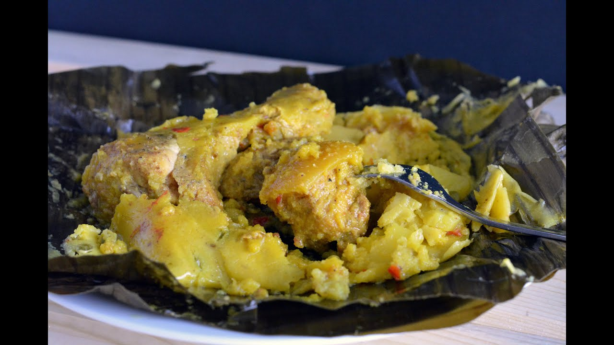

No se conoce mucho sobre el origen de los tamales, pero todos coinciden en que se trata de masa envuelta en hojas. Cada país y región tiene su versión. En Colombia, hay varias variedades. En Tolima, el tamal es redondo y se prepara con huevo cocido, pollo, cerdo, arroz, arveja, papa y zanahoria. Este tamal es tan popular que tiene un día dedicado (24 de junio). En Antioquia, el tamal se hace con masa de maíz molido, carne de cerdo, costilla, pierna, tocino, papa, arvejas y zanahoria. En Santander, la masa es de maíz con tocino, costilla de cerdo, gallina y garbanzos.
